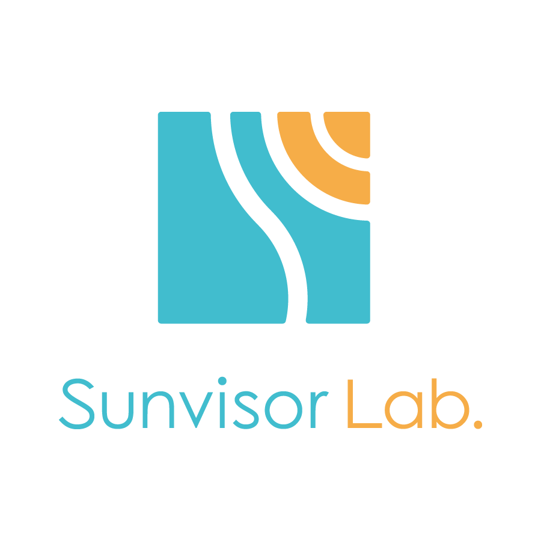

初めまして Sunvisor Lab. です
IT を活用していこうとするときに、ほんの少しの困り事が原因でその先に進めないということが多くあります。 Sunvisor Lab. は、そういったちょっとした困り事を解決するお手伝いをします。

Development, Consulting, Education
IT を活用していこうとするときに、ほんの少しの困り事が原因でその先に進めないということが多くあります。 Sunvisor Lab. は、そういったちょっとした困り事を解決するお手伝いをします。

- こんなことはコンピュータにさせたら簡単にできるんじゃないだろうか？
- 毎日この手作業をしているけど、この手間が楽になったら、ずいぶん違うのだが。
- 事務を自動化できるようなシステムを入れたいけど、どうやったらいいのかわからない。
- 新しい事務所を作るのに合わせて、パソコンやネットワークを綺麗に構築したい。
このような要望やジレンマは、多くの企業・事業所で抱えられているのではないでしょうか。
また、すでに情報システムを構築している企業でも、
- 最新のソリューションから自社のシステムがどんどん離れていっている
- 社内システムをモバイルに対応させたいけど、どうしたらよいのだろう
- 社内システム Web に以降していきたいのだが、操作性を犠牲にしたくない
といった問題を抱えている情報システム部門の方も多いのではないでしょうか。
ITの世界はクラウド利用の時代になり、以前ならば多額の初期投資を必要としたビジネスシステムが、サービスとして安価に提供されるようになってきました。 資金的な余裕が大きくない小規模な企業・組織でも、ビジネスを自動化するソリューションを利用できるようになったのです。 Sunvisor Lab. は、そういったソリューション導入のお手伝いをします。
Sunvisor Lab. は次のサービスを提供します。
最新の HTML5 技術を使った、リッチな Web 業務アプリケーションを開発しご提供します。サービスとしての提供も可能です。 Web アプリケーションのフロントエンド部分の受託開発にも対応します。
組織、企業の中でのIT活用、業務改善に関するコンサルティングをご提供します。 業務内容やご予算をヒアリングし、お客様に最適な解決方法をご提案します。
IT 導入の際の技術的な支援、お客様のスタッフの教育をします。 導入の時には、いろいろとわからないことも多いものです。 そういった時に、一番の解決方法をご提案します。
Sunvisor Lab. は、小中規模の組織がITを活用する上に必要なさまざまな技術を持っています。
など、小さく簡単なことから、本格的な開発までをカバーできます。 中でも、得意としているのは、Web 業務アプリケーションの構築です。 Sunvisor Lab. ではアプリの構築に Sencha のフレームワークを使います。
Sencha フレームワークは、デスクトップにもモバイルにも対応した高機能なフレームワークで、操作性の良い高機能の Web 業務アプリケーションの構築ができます。 昨今の HTML5 ブームの中でも、Web 業務アプリケーションの操作性はなかなか改善しません。 それは、ユーザーフレンドリーな Web アプリケーションを作るには、多くの手間がかかり、それを維持してゆくにも多くの苦労が必要だからです。 そういった苦労から開発者を解放してくれるのがすぐれたフレームワークです。中でも Sencha のフレームワークは、安定性とサポート、保守性の高さで群を抜いています。Sencha を利用することで、複雑な Web 業務アプリケーションを少ない工数で作成でき、ひいてはユーザーに優れたサービスを提供できます。
| 屋号 | Sunvisor Lab. (サンバイザー ラボ) |
| 開業 | 2016年 1月 |
| hisashi@sunvisor.net | |
| 代表 | 中村 久司 |